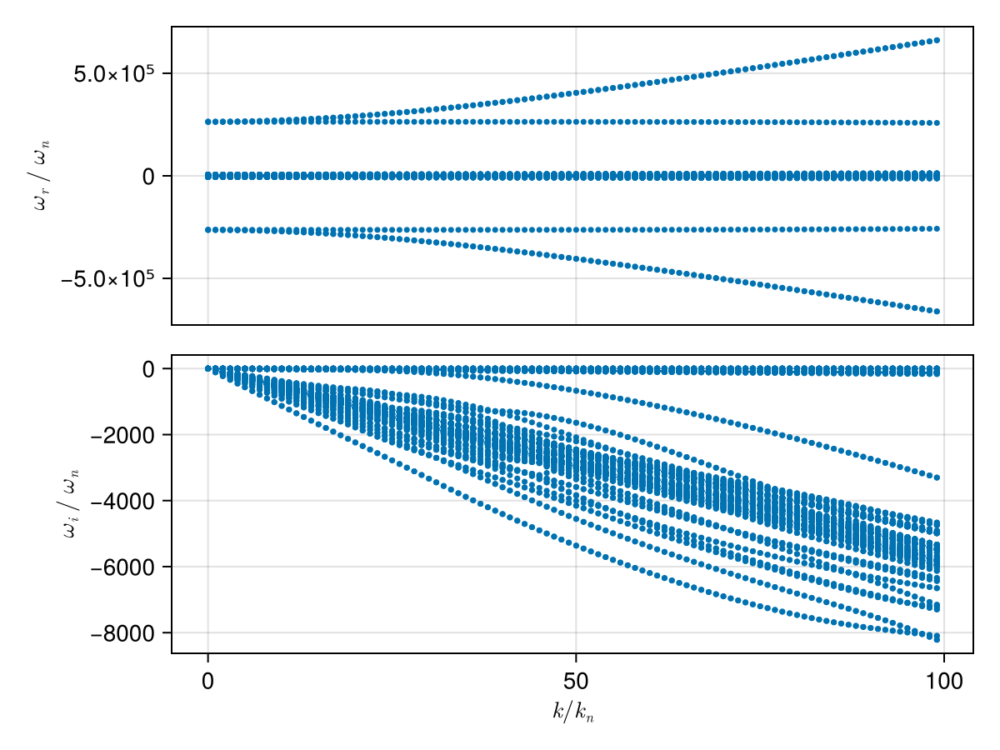
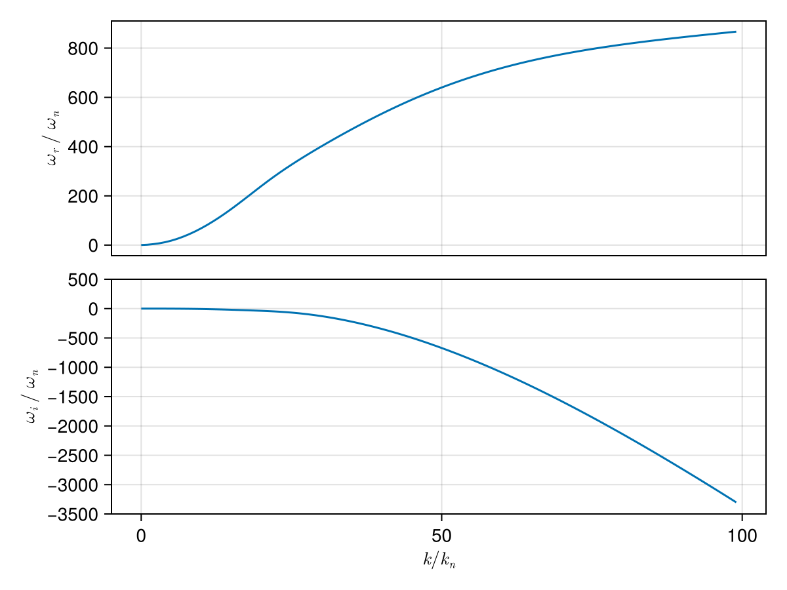

Case: Dispersion surface tracking (2D scan)
This page demonstrates how to construct a dispersion surface by scanning a 2D parameter space (wave number k and propagation angle θ) and using branch tracking to follow a consistent mode across the scan.
We consider a typical electron–proton plasma and scan:
kin normalized unitsk/k_n, wherek_n = ω_pi/cθfrom 5° to 90°
using PlasmaBO
using PlasmaBO: c0
B0 = 5e-9 # [Tesla]
n = 5.0e6
T = 12.94
ion = Maxwellian(:p, n, T)
electron = Maxwellian(:e, n, T)
species = (ion, electron)
wn = abs(B0 * ion.q / ion.m)
wpi = plasma_frequency(ion.q, n, ion.m)
kn = wpi / c0
wci = wn
# Kinetic solver settings (adjust upward for accuracy)
N = 33Dispersion Curve Scan
julia> using CairoMakiejulia> θ = deg2rad(45);julia> k_ranges = (0.01:1:100) .* kn;julia> results = solve(species, B0, k_ranges, θ; N)Solving dispersion (k, θ)... 2%|▌ | ETA: 0:00:53 Solving dispersion (k, θ)... 16%|███▋ | ETA: 0:00:11 Solving dispersion (k, θ)... 28%|██████▌ | ETA: 0:00:08 Solving dispersion (k, θ)... 39%|█████████ | ETA: 0:00:07 Solving dispersion (k, θ)... 49%|███████████▎ | ETA: 0:00:06 Solving dispersion (k, θ)... 59%|█████████████▋ | ETA: 0:00:05 Solving dispersion (k, θ)... 68%|███████████████▋ | ETA: 0:00:04 Solving dispersion (k, θ)... 77%|█████████████████▊ | ETA: 0:00:03 Solving dispersion (k, θ)... 85%|███████████████████▌ | ETA: 0:00:02 Solving dispersion (k, θ)... 93%|█████████████████████▍ | ETA: 0:00:01 Solving dispersion (k, θ)... 100%|███████████████████████| Time: 0:00:11 PlasmaBO.DispersionSolution{StepRangeLen{Float64, Base.TwicePrecision{Float64}, Base.TwicePrecision{Float64}, Int64}, Float64, Matrix{Vector{ComplexF64}}}(9.81977277497953e-8:9.819772774979531e-6:0.0009722557024507233, 0.7853981633974483, Vector{ComplexF64}[[-126621.46727634202 + 5.1813413719474626e-11im, -126181.23357016458 + 2.2657025898540757e-9im, -125742.53625411805 - 4.951082631288171e-11im, -2638.5615125116406 - 0.24087074985028906im, -2638.561512511617 - 0.24087074985101084im, -2638.561512511612 - 0.24087074985024354im, -2638.4470794029844 - 0.26511858494231777im, -2638.447079402977 - 0.26511858494243135im, -2638.447079402961 - 0.26511858494183116im, -2638.3543452262943 - 0.2802846465859046im … 2638.3543452262857 - 0.2802846465865942im, 2638.447079402964 - 0.2651185849424478im, 2638.447079402968 - 0.2651185849429216im, 2638.4470794029708 - 0.26511858494184537im, 2638.5615125115955 - 0.2408707498516678im, 2638.5615125116133 - 0.2408707498511087im, 2638.5615125116174 - 0.2408707498510287im, 125742.53625411821 - 5.062663100508022e-11im, 126181.23357016433 - 2.3953218125891985e-9im, 126621.46727634105 + 4.857999361129479e-11im]; [-126647.93289207446 - 1.532107773982716e-13im, -126198.780184847 + 5.854140772216945e-10im, -125768.4940040842 + 8.27828916527551e-11im, -2671.711147848317 - 24.327945734953207im, -2671.711147848291 - 24.327945734954017im, -2671.7111475953184 - 24.327946383221388im, -2660.1534038758136 - 26.776977079149447im, -2660.1534038757964 - 26.77697707914918im, -2660.1533937098093 - 26.776965185600453im, -2650.787333460298 - 28.30873735069447im … 2650.787333460309 - 28.308737350694305im, 2660.153393709814 - 26.776965185601142im, 2660.153403875814 - 26.776977079149685im, 2660.1534038758214 - 26.776977079149663im, 2671.711147595335 - 24.327946383220933im, 2671.711147848276 - 24.327945734953815im, 2671.7111478483134 - 24.32794573495296im, 125768.49400408335 - 1.816675085642595e-11im, 126198.78018484639 + 5.034093479136149e-10im, 126647.93289207481 - 8.452752325675874e-11im]; … ; [-313940.64254257735 - 4.562631067815971e-8im, -313861.5464174432 - 4.971912785372722e-8im, -123618.23036716043 - 2.4524320133128737e-5im, -5887.225775507089 - 2360.7742192898436im, -5887.056696386655 - 2360.9532339551133im, -5774.271214584448 - 2344.216598344446im, -5223.734491155941 - 2588.8106209917482im, -5109.542451363703 - 2214.22483747529im, -5007.815770121019 - 2360.774219289839im, -5006.872705233713 - 2361.695775130923im … 5006.872705233745 - 2361.6957751309405im, 5007.81577012101 - 2360.7742192898418im, 5109.54245136368 - 2214.224837475171im, 5223.734491155721 - 2588.810620991655im, 5774.271214584532 - 2344.2165983444897im, 5887.056696386659 - 2360.9532339551097im, 5887.2257755070605 - 2360.774219289838im, 123618.23036716091 - 2.452483896875988e-5im, 313861.5464174426 - 4.9744357966119424e-8im, 313940.6425425771 - 4.564613220736646e-8im]; [-316611.46917836776 - 3.809910558578273e-8im, -316532.8275260991 - 5.776447010809016e-8im, -123505.55495900533 - 2.591530507326825e-5im, -5920.375410843818 - 2384.861294274959im, -5920.1981739009225 - 2385.048572113642im, -5802.211344748077 - 2366.079352138649im, -5259.865772167258 - 2621.3752889476004im, -5147.17183682394 - 2234.949525972821im, -5040.965405457724 - 2384.8612942749533im, -5039.996688056841 - 2385.806051307275im … 5039.996688056859 - 2385.806051307282im, 5040.9654054576795 - 2384.86129427494im, 5147.171836823984 - 2234.9495259728023im, 5259.865772167302 - 2621.3752889475904im, 5802.211344748068 - 2366.0793521386395im, 5920.198173900971 - 2385.0485721136492im, 5920.375410843775 - 2384.861294274951im, 123505.55495900496 - 2.591466645883234e-5im, 316532.8275260988 - 5.755418897024356e-8im, 316611.46917836793 - 3.794946934476684e-8im];;])
plot(results, kn, wn)
using PlasmaBO: plot_branches
# k, ω pairs for initial branch points (see `BranchPoint` for more control over tracking)
initial_point = (50 * kn, -600 * wn *im)
branch = track(results, initial_point)
f, (ax1, ax2) = plot_branches((branch,), kn, wn)
ylims!(ax2, -3500,500)
f
Dispersion Surface Scan (2D)
julia> ks = (0.1:10:100.0) .* kn;julia> θs = deg2rad.(10.0:10.0:90.0);julia> res2d = solve(species, B0, ks, θs; N)Solving dispersion (k, θ)... 14%|███▍ | ETA: 0:00:06 Solving dispersion (k, θ)... 28%|██████▍ | ETA: 0:00:05 Solving dispersion (k, θ)... 40%|█████████▎ | ETA: 0:00:05 Solving dispersion (k, θ)... 51%|███████████▊ | ETA: 0:00:04 Solving dispersion (k, θ)... 62%|██████████████▎ | ETA: 0:00:03 Solving dispersion (k, θ)... 72%|████████████████▋ | ETA: 0:00:02 Solving dispersion (k, θ)... 82%|██████████████████▉ | ETA: 0:00:02 Solving dispersion (k, θ)... 92%|█████████████████████▎ | ETA: 0:00:01 Solving dispersion (k, θ)... 100%|███████████████████████| Time: 0:00:09 PlasmaBO.DispersionSolution{StepRangeLen{Float64, Base.TwicePrecision{Float64}, Base.TwicePrecision{Float64}, Int64}, Vector{Float64}, Matrix{Vector{ComplexF64}}}(9.81977277497953e-7:9.81977277497953e-5:0.0008847615270256557, [0.17453292519943295, 0.3490658503988659, 0.5235987755982988, 0.6981317007977318, 0.8726646259971648, 1.0471975511965976, 1.2217304763960306, 1.3962634015954636, 1.5707963267948966], Vector{ComplexF64}[[-126621.8006186627 + 1.4583102481396503e-10im, -126181.24223376116 + 6.211159065675925e-10im, -125742.87426458817 + 6.058027543558121e-11im, -2642.846860283876 - 3.3546755347055925im, -2642.846860283873 - 3.354675534707004im, -2642.846860283865 - 3.3546755347058763im, -2641.2531177885844 - 3.692382039953155im, -2641.253117788579 - 3.6923820399581757im, -2641.253117788562 - 3.692382039956975im, -2639.9615824984007 - 3.9036040998669197im … 2639.961582498399 - 3.903604099867678im, 2641.253117788574 - 3.6923820399590883im, 2641.253117788597 - 3.692382039954716im, 2641.2531177885985 - 3.6923820399585345im, 2642.846860283857 - 3.3546755347066974im, 2642.8468602838775 - 3.3546755347063755im, 2642.8468602838857 - 3.354675534706247im, 125742.87426458929 - 1.4698531984437748e-10im, 126181.2422337611 - 6.233102581281204e-10im, 126621.80061866157 - 6.102002120621291e-11im] [-126621.78542391394 + 3.3113978247824305e-11im, -126181.27204910862 + 2.7411639608186883e-9im, -125742.85883577759 + 1.5806126418431215e-10im, -2642.6353575488943 - 3.200994138655622im, -2642.6353575488843 - 3.2009941386564407im, -2642.6353575488756 - 3.2009941386594774im, -2641.114626159762 - 3.5232299354447845im, -2641.114626159755 - 3.523229935443922im, -2641.11462615972 - 3.5232299353848724im, -2639.8822575298736 - 3.7247756791437414im … 2639.8822575298823 - 3.7247756791434625im, 2641.1146261596973 - 3.523229935383483im, 2641.114626159749 - 3.5232299354458037im, 2641.1146261597664 - 3.5232299354447223im, 2642.6353575488697 - 3.2009941386567413im, 2642.635357548871 - 3.2009941386550587im, 2642.6353575488874 - 3.2009941386593264im, 125742.85883577765 - 3.0308140616979494e-11im, 126181.27204910864 - 2.7404197122987726e-9im, 126621.78542391439 - 1.5812570933115475e-10im] … [-126621.6400258514 + 2.6883712747269306e-10im, -126181.56492171851 - 1.298711016641241e-9im, -125742.71135516925 + 1.2270648364585968e-12im, -2639.0440903433137 - 0.5915198082909804im, -2639.044090343311 - 0.5915198082923158im, -2639.0440903432477 - 0.5915198085234166im, -2638.7630705411116 - 0.6510665767281624im, -2638.76307054111 - 0.6510665767255319im, -2638.7630705373867 - 0.6510665725324385im, -2638.535338052066 - 0.6883107200582348im … 2638.53533805207 - 0.6883107200583508im, 2638.7630705374218 - 0.6510665725323861im, 2638.763070541092 - 0.6510665767277711im, 2638.763070541101 - 0.6510665767266806im, 2639.044090343233 - 0.5915198085235283im, 2639.044090343302 - 0.5915198082920399im, 2639.0440903433177 - 0.5915198082896753im, 125742.71135516955 - 2.7193134136336574e-10im, 126181.56492171847 + 1.3003240336676563e-9im, 126621.64002585123 - 1.1317980735357996e-12im] [-126621.6348825438 - 7.457672283026902e-11im, -126181.57527634565 - 1.0232830686284682e-9im, -125742.70614358899 + 1.3326963192205724e-10im, -2638.2300161582652 + 2.6201263381153694e-13im, -2638.2300161582643 + 1.1368683772161603e-13im, -2638.2300161582625 - 8.242295734817162e-13im, -2638.2300161582607 + 3.9057646006313007e-13im, -2638.2300161582602 + 2.2737367544323206e-13im, -2638.23001615826 + 7.673861546209082e-13im, -2638.230016158256 + 4.2948674548266465e-13im … 2638.2300161582607 + 1.2789769243681803e-13im, 2638.230016158261 + 1.2065348720113889e-13im, 2638.2300161582625 + 1.6350988326089034e-14im, 2638.230016158263 + 2.7554347692415604e-13im, 2638.230016158263 + 4.902744876744691e-13im, 2638.2300161582666 - 3.1256507798671507e-13im, 2638.230016158274 - 4.771728820832727e-13im, 125742.70614358914 + 7.324548181285239e-11im, 126181.5752763462 + 1.0395402864226593e-9im, 126621.63488254369 - 1.2869484960599784e-10im]; [-130046.23180107198 - 8.545577222437771e-11im, -129226.3567274135 + 1.3302183336456604e-10im, -126179.48881185579 - 2.4402677112989327e-9im, -3104.531272846274 - 338.82222900534265im, -3104.5312728462213 - 338.8222290053387im, -3104.5312579689935 - 338.8222555732067im, -2943.5632808220485 - 372.9305860357988im, -2943.563280822019 - 372.93058603576793im, -2943.562949292044 - 372.9300363355796im, -2813.121406962328 - 394.26414247914477im … 2813.1214069623293 - 394.2641424791446im, 2943.5629492920166 - 372.93003633557566im, 2943.5632808220375 - 372.9305860357719im, 2943.5632808220444 - 372.9305860357953im, 3104.5312579689908 - 338.82225557320567im, 3104.5312728462354 - 338.8222290053413im, 3104.5312728462495 - 338.82222900534396im, 126179.48881185561 - 2.8097808524307766e-9im, 129226.35672741389 - 5.298118492034995e-10im, 130046.23180107171 - 1.1447298512365841e-10im] [-130020.12452199437 + 2.399356340757641e-10im, -129238.36480585451 - 4.997262817409895e-10im, -126168.23913101126 - 1.2995938887306058e-9im, -3083.169496612829 - 323.30040800420727im, -3083.1694966128 - 323.3004080042901im, -3083.169275792571 - 323.3008039648355im, -2929.575626311539 - 355.84622347995844im, -2929.5756263103663 - 355.84622347836756im, -2929.5706565880328 - 355.8380503634985im, -2805.1539693972763 - 376.2040008430158im … 2805.15396939726 - 376.20400084301406im, 2929.5706565880246 - 355.8380503634998im, 2929.575626310375 - 355.8462234783707im, 2929.5756263115377 - 355.8462234799572im, 3083.169275792574 - 323.3008039648381im, 3083.169496612796 - 323.3004080042868im, 3083.169496612836 - 323.3004080042131im, 126168.23913101145 - 1.9406467544058614e-9im, 129238.36480585387 - 1.921347348675104e-10im, 130020.12452199399 - 2.2577002144677924e-10im] … [-129717.766989063 - 3.401092203450027e-10im, -129565.62966482229 + 9.312126284737952e-12im, -126098.71047222393 - 1.3525711208381821e-12im, -2720.4515088506064 - 59.74350063742427im, -2720.4515087463283 - 59.74350089012551im, -2720.441047385926 - 59.766587047981375im, -2692.0685088262935 - 65.75772424952656im, -2692.0685049451235 - 65.7577195586545im, -2691.733289209862 - 65.28442184344195im, -2671.573974835521 - 69.5239891893478im … 2671.573974835509 - 69.52398918934928im, 2691.733289209863 - 65.28442184344136im, 2692.0685049451176 - 65.75771955865132im, 2692.068508826279 - 65.757724249526im, 2720.4410473859525 - 59.76658704798149im, 2720.451508746331 - 59.743500890123926im, 2720.4515088506155 - 59.74350063742667im, 126098.71047222412 + 2.6158433925893565e-11im, 129565.62966482012 - 3.451182587683947e-10im, 129717.76698906126 + 2.665722527011264e-10im] [-129668.76650537761 - 1.563132086232414e-10im, -129616.10202991348 - 3.24770391744726e-9im, -126096.80894501744 + 1.403745985883156e-10im, -2638.230016158494 - 1.6404227470241302e-10im, -2638.2300161582725 + 9.947598300641403e-13im, -2638.2300161582716 + 1.9029222642075183e-12im, -2638.2300161582693 - 7.958078640513122e-13im, -2638.2300161582684 + 1.5476508963274682e-13im, -2638.230016158267 - 3.369510616704763e-13im, -2638.230016158267 + 3.410605131648481e-13im … 2638.2300161582575 - 9.947598300641403e-14im, 2638.2300161582607 - 5.582201367815287e-13im, 2638.2300161582616 + 1.1656257556391658e-13im, 2638.2300161582625 - 2.5579538487363607e-13im, 2638.2300161582657 - 3.1787072973799013e-12im, 2638.230016158269 - 2.0191313898632046e-13im, 2638.2300161582803 - 4.3252574387978637e-13im, 126096.8089450175 - 1.5600457763865594e-10im, 129616.10202991504 + 2.1908710739871176e-9im, 129668.76650537783 + 1.736238854763396e-10im]; … ; [-267526.6897011374 - 1.383266433530536e-8im, -267333.9463584649 - 1.4583579995210184e-8im, -126172.77219117103 - 8.131288577102013e-5im, -6336.322160782877 - 2687.095103299793im, -6336.322159074733 - 2687.0951046509103im, -6336.238399861399 - 2687.144919316501im, -5456.912155396808 - 2687.0951032998228im, -5456.911892188251 - 2687.09527285988im, -5452.350753781644 - 2688.5246277113793im, -5059.887961382793 - 2955.986624764857im … 5059.887961382821 - 2955.9866247648615im, 5452.350753781651 - 2688.5246277113706im, 5456.911892188234 - 2687.0952728598854im, 5456.912155396806 - 2687.0951032998073im, 6336.238399861349 - 2687.144919316498im, 6336.322159074719 - 2687.0951046509012im, 6336.322160782875 - 2687.0951032997964im, 126172.77219117116 - 8.13134178433003e-5im, 267333.94635846454 - 1.4604665921069682e-8im, 267526.68970113713 - 1.3838871382176876e-8im] [-267503.4261524523 - 4.311109034492336e-8im, -267319.9842888084 - 4.446839103642518e-8im, -126162.67963775866 - 5.874481832922612e-5im, -6166.908470060522 - 2563.9963050630945im, -6166.908058156644 - 2563.996648242656im, -6164.913344602687 - 2564.449767607726im, -5287.498464674428 - 2563.9963050630595im, -5287.48326996192 - 2564.008140618283im, -5251.723729621506 - 2561.224472491413im, -4965.899650699192 - 2797.012465938781im … 4965.8996506991925 - 2797.012465938787im, 5251.723729621513 - 2561.224472491419im, 5287.483269961927 - 2564.0081406182703im, 5287.498464674461 - 2563.996305063085im, 6164.913344602694 - 2564.4497676077317im, 6166.908058156684 - 2563.996648242675im, 6166.908470060511 - 2563.996305063056im, 126162.67963775912 - 5.8745684279826704e-5im, 267319.9842888089 - 4.439880285644904e-8im, 267503.42615245277 - 4.325556801632047e-8im] … [-266971.71631718107 + 4.5802216767946564e-11im, -265749.96110867034 + 4.242515207699215e-11im, -118413.00558056672 - 5.249316075383528e-10im, -3290.3034384015887 - 473.807366441355im, -3290.1314368731746 - 474.111998235265im, -3257.822805965329 - 512.8095690843907im, -3222.7561454919487 - 423.9507109118312im, -3065.2065768224475 - 521.5043279591061im, -3061.7978352008104 - 514.4723377181094im, -2972.366400525933 - 742.6364618166109im … 2972.366400525916 - 742.6364618166023im, 3061.7978352008067 - 514.4723377181099im, 3065.2065768224584 - 521.5043279591073im, 3222.7561454919137 - 423.95071091185025im, 3257.822805965336 - 512.8095690843685im, 3290.1314368731446 - 474.111998235264im, 3290.303438401596 - 473.80736644135294im, 118413.00558056682 - 6.333714124184467e-10im, 265749.96110867 + 4.924530913845624e-11im, 266971.71631718165 - 1.4487699928622533e-10im] [-267036.43382901547 + 3.687793478533514e-11im, -265686.8054326455 + 1.7911782413189486e-11im, -117722.58317984059 + 4.1801191757001184e-11im, -2638.2300161583507 + 1.1070774837303154e-10im, -2638.2300161582734 - 1.2121773818394395e-11im, -2638.2300161582616 - 5.999270162540362e-13im, -2638.2300161582584 - 3.581135388230905e-12im, -2638.230016158256 - 7.478462293875054e-13im, -2638.2300161582557 - 1.907814184409773e-13im, -2638.230016158255 - 1.2324860545079184e-14im … 2638.2300161582552 - 5.542857839380133e-13im, 2638.230016158257 - 3.553074501283504e-12im, 2638.230016158259 - 7.066569551739121e-14im, 2638.230016158259 + 8.748557434046234e-14im, 2638.2300161582607 - 1.2292389328649733e-12im, 2638.230016158267 - 1.0937917238607042e-12im, 2638.230016158979 - 6.023092246084539e-10im, 117722.5831798406 - 4.42228221676074e-11im, 265686.8054326447 - 1.5916157281026244e-11im, 267036.43382901564 + 4.29636299206779e-12im]; [-293795.7799412519 - 1.4318390537766066e-8im, -293635.9999890173 - 1.4858438669728494e-8im, -126176.20945010238 - 0.0001453288455963645im, -6798.0065733452575 - 3022.562656770444im, -6798.00656908273 - 3022.562659875137im, -6797.868548884315 - 3022.626622724916im, -5918.596567959145 - 3022.5626567704317im, -5918.596049435889 - 3022.5629806517336im, -5912.412511842661 - 3023.7110549457984im, -5362.546384741876 - 3324.6220094755736im … 5362.546384741886 - 3324.6220094755704im, 5912.412511842668 - 3023.711054945802im, 5918.59604943592 - 3022.5629806517413im, 5918.596567959161 - 3022.5626567704344im, 6797.868548884249 - 3022.626622724906im, 6798.006569082714 - 3022.562659875139im, 6798.0065733452675 - 3022.5626567704576im, 126176.20945010266 - 0.0001453294362725327im, 293635.99998901755 - 1.4988472685217857e-8im, 293795.77994125185 - 1.4412762538995594e-8im] [-293760.47248716064 - 4.4067768964132566e-8im, -293608.73013647384 - 4.573977842248195e-8im, -126161.3074621129 - 0.00010509010552538525im, -6607.4426091244795 - 2884.0957189286232im, -6607.441666758578 - 2884.096504753379im, -6603.932590101836 - 2884.454698933342im, -5728.032603738458 - 2884.0957189286496im, -5728.005596155158 - 2884.117128739089im, -5675.9966867154835 - 2874.6337340819855im, -5269.211112220605 - 3146.1229528952917im … 5269.211112220622 - 3146.1229528953254im, 5675.996686715526 - 2874.633734081998im, 5728.005596155166 - 2884.1171287390875im, 5728.03260373839 - 2884.095718928616im, 6603.932590101838 - 2884.4546989333467im, 6607.441666758587 - 2884.0965047534005im, 6607.442609124469 - 2884.0957189286173im, 126161.3074621129 - 0.00010509196582125607im, 293608.7301364744 - 4.570727348467313e-8im, 293760.4724871612 - 4.404484691773581e-8im] … [-292980.77859298675 + 1.0725102733741105e-10im, -291734.3181264645 + 2.0184563296014262e-10im, -114316.92957399412 - 1.3408866976695879e-9im, -3371.71085690887 - 532.9593472704836im, -3371.4518556099733 - 533.4071868750932im, -3335.464530884463 - 586.1181888842463im, -3304.836685813214 - 469.54987808334687im, -3118.5120151076358 - 586.6109856319083im, -3113.8841631327164 - 575.9049885785561im, -3014.4555529182912 - 846.6845431085015im … 3014.4555529182517 - 846.6845431084915im, 3113.884163132726 - 575.9049885785571im, 3118.5120151076367 - 586.6109856319102im, 3304.8366858131963 - 469.5498780833835im, 3335.4645308844315 - 586.1181888842198im, 3371.4518556099756 - 533.4071868750934im, 3371.710856908874 - 532.959347270489im, 114316.92957399414 - 1.3437330736233622e-9im, 291734.318126465 + 1.8734362501539488e-10im, 292980.77859298734 - 4.828351052310609e-10im] [-293060.7825108101 - 2.2579665699328643e-10im, -291674.0854377942 + 4.0220368230417774e-11im, -113340.75968884496 + 2.2386102926947892e-11im, -2638.2300161582752 + 3.1470911406610495e-9im, -2638.230016158259 - 5.2735593669694936e-14im, -2638.2300161582566 + 1.729727472365994e-13im, -2638.2300161582552 - 2.2737367544323206e-13im, -2638.2300161582525 - 2.342422090259069e-13im, -2638.230016158252 + 7.771561172376096e-13im, -2638.230016158251 - 3.126388037344441e-13im … 2638.230016158253 + 3.1677611922464877e-13im, 2638.230016158255 - 1.887305416115037e-13im, 2638.230016158256 + 8.242295734817162e-13im, 2638.2300161582566 + 4.618527782440651e-14im, 2638.2300161582584 - 2.0740529066368021e-13im, 2638.230016158259 + 1.0023981644735613e-11im, 2638.2300161582793 - 3.979039320256561e-13im, 113340.75968884495 - 1.8714370294429806e-11im, 291674.0854377935 + 1.5091927707544528e-11im, 293060.7825108102 + 2.563728508848572e-10im]])
plot(res2d, kn, wn)
# Choose a reference angle and reference k for seeding the tracked mode
seed = (90.5 * kn, deg2rad(20), (1000 - 3000im) * wn)
branch = track(res2d, seed)
plot_branches((branch,), kn, wn)